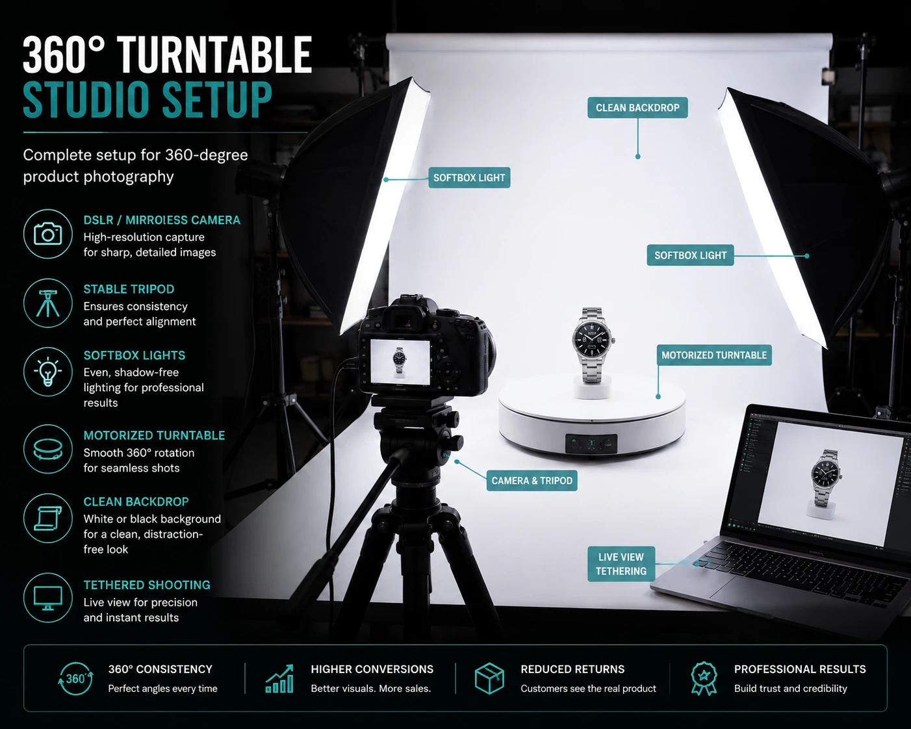
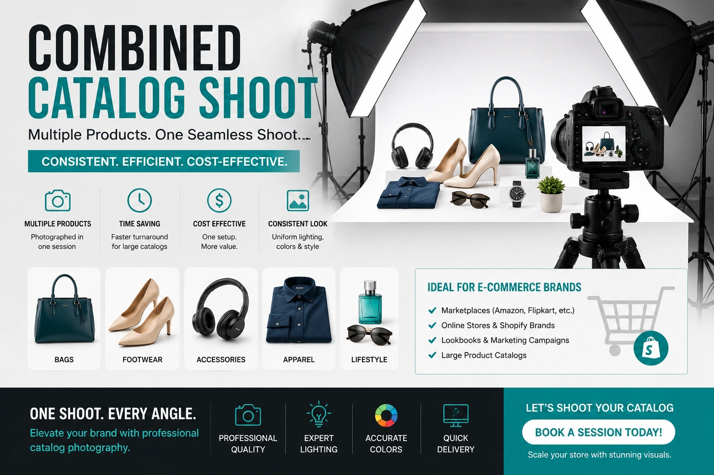

360-Degree Product Photography: Reducing Returns and Boosting Trust for Shopify Brands
Why Static Images Are No Longer Enough
Indian e-commerce has reached a point of visual maturity where the static product image — even a technically excellent one — is no longer sufficient for categories where buyers need to understand shape, dimension, and all-round construction before committing to a purchase. The gap between what a buyer expects from a product image and what they receive in the parcel is the single most expensive gap in e-commerce: it drives returns, negative reviews, and the erosion of brand trust that follows.
360-degree product photography closes this gap. By allowing buyers to interactively rotate the product in any direction before purchase, it replicates the physical act of picking up and examining a product in a store — the experience that online retail has always lacked. For Shopify brands, Amazon sellers, and direct-to-consumer businesses, the investment in interactive product imagery is one of the clearest and most measurable paths to improved conversion and reduced return rates.
How 360-Degree Product Photography Works
A 360-degree product photography session captures the product on a motorised turntable at consistent intervals — typically 24 to 36 frames — covering the full rotation of the product. These frames are delivered as a spin viewer-ready image set that embeds directly on any Shopify or e-commerce product page. The buyer drags or taps to rotate the product in any direction, examining every surface, angle, and detail before purchase.
The technical requirements for a successful 360-degree shoot: consistent studio lighting that eliminates hot spots and shadow variation across all frames, a calibrated turntable that rotates at identical increments for each frame, and post-production processing that removes background, corrects exposure uniformly across all frames, and compresses the image set for fast web loading. The delivered output is compatible with standard Shopify spin viewer apps and most major e-commerce platform plugins without additional development work.

The Direct Link to Reduced Returns
Reducing product returns with visuals is one of the clearest commercial arguments for investing in e-commerce visual content beyond the standard white background image set. The mechanism is straightforward: most returns in categories like footwear, bags, jewellery, and home goods are caused by appearance mismatch — the product looks different in person than it did in the listing image. Buyers who have interactively examined every angle of a product before purchase arrive with accurate expectations. The result is a measurable reduction in return rate that directly improves margin.
For Shopify brands calculating the ROI of a 360-degree product photography investment, the return rate reduction alone is frequently sufficient justification. A brand processing 500 orders per month with a 15% return rate on a product category, reducing that return rate to 8% through interactive imagery, recovers significant fulfilment, repackaging, and lost margin cost — often exceeding the total production cost of the 360-degree shoot within the first quarter of deployment.
E-commerce Conversion Rate Optimization Through Visual Trust
Beyond returns, e-commerce conversion rate optimization is the second primary commercial argument for interactive product imagery. The relationship between visual trust and conversion rate is well established: buyers who feel they fully understand a product before purchasing are more likely to complete the purchase rather than abandon the product page in search of more information elsewhere.
360-degree product photography builds visual trust at the product page level in a way that even high-quality static images cannot. When a buyer can rotate a shoe and examine the sole construction, rotate a watch and examine the clasp mechanism, or rotate a furniture piece and understand exactly how the joints are finished — the information gap that causes hesitation is closed. The result is a higher add-to-cart rate, a lower product page exit rate, and a stronger overall conversion funnel for the entire store.
Higher Add-to-Cart Rate
Buyers who can fully examine a product interactively are more likely to complete the purchase rather than exit in search of more information from another source.
Lower Return Rate
Interactive examination before purchase sets accurate expectations, directly reducing the appearance-mismatch returns that erode margin across footwear, bags, jewellery, and home goods categories.
Stronger Brand Trust
A brand that shows its product from every angle is communicating confidence in its product quality — a trust signal that converts first-time buyers and improves repeat purchase rates.
Lower Exit Rate
Product pages with interactive product imagery hold buyer attention longer, reducing the bounce rate that tells algorithms your page is not delivering value to visitors.
High-Resolution Catalog Shoots: The Foundation Layer
360-degree product photography works best as part of a complete high-resolution catalog shoot rather than as a standalone production. The full visual asset stack for a product that converts at the highest rate combines: a pure white background hero image for the main listing thumbnail, a 360-degree spin set for interactive examination, detail close-up images for texture, hardware, and construction quality, and lifestyle images showing the product in context and in use.
High-resolution catalog shoots that incorporate 360-degree capture alongside traditional still photography deliver the complete asset library in a single production session, keeping costs lower than multiple separate shoots while ensuring consistent lighting, colour treatment, and visual identity across every image type. For Shopify brands building a full product catalogue, this integrated production approach is significantly more efficient than adding 360-degree capture as a retrospective add-on.

Amazon Product Video Requirements: The Moving Image Layer
For Amazon sellers, interactive product imagery is complemented by video — and understanding Amazon product video requirements is essential for brands maximising their listing performance on the platform. Amazon's current video requirements include:
- Minimum resolution: 1280 × 720 pixels (1920 × 1080 recommended)
- Maximum file size: 5GB
- Accepted formats: MP4 and MOV
- Recommended duration: 30 to 120 seconds for product showcase videos
- Prohibited content: Pricing information, URLs, contact details, and competitor mentions are not permitted within the video
- Primary focus: The product must be the primary visual subject throughout the video
- Audio: Where voice-over is included, audio must be clear and the content must accurately represent the listed product
For brands investing in e-commerce visual content across both still and moving image, the most efficient production approach combines the 360-degree still photography session with a short product video shoot on the same day — sharing the same studio setup, lighting configuration, and background treatment. This produces both the spin set and the platform-ready video asset in a single production, minimising cost and ensuring visual consistency across both output types.
Which Product Categories Benefit Most
Interactive product imagery delivers the highest return on investment for categories where all-round shape, dimension, and construction detail are critical to the purchase decision:
High Priority Categories
- Footwear — sole construction, toe shape, heel height
- Watches and jewellery — clasp detail, stone setting, finish
- Bags and accessories — strap hardware, zip construction, base structure
- Electronics — port placement, button layout, form factor
Strong ROI Categories
- Furniture and home goods — joint quality, material finish, scale
- Sports equipment — grip texture, structural detail, moving parts
- Kitchenware — lid fit, handle construction, interior finish
- Toys and collectibles — all-round character detail, scale, articulation
Combined with Model Shots
- Apparel — 360° shows construction; model shows fit and drape
- Eyewear — 360° shows frame shape; model shows proportion on face
- Hats and headwear — 360° shows form; model shows how it sits and fits
- Belts — 360° shows buckle detail; model shows length and proportion
Technical Delivery: What to Confirm Before Booking
Before commissioning a 360-degree product photography session, confirm these technical deliverables with your production team to ensure compatibility with your platform and a smooth deployment process:
- Frame count: Confirm whether the session delivers 24 or 36 frames per rotation. 36 frames produces a smoother spin interaction; 24 frames is sufficient for most products and loads faster on mobile.
- Background treatment: Confirm whether backgrounds are removed in post-production to pure white or transparent PNG, and whether this is included in the quoted price or billed separately.
- File format and compression: Confirm delivery as both full-resolution TIFF or PNG files and web-optimised WebP or JPEG sets ready for platform upload without additional processing.
- Platform compatibility: Confirm the delivered spin set is compatible with your specific Shopify spin viewer app or e-commerce platform plugin before the shoot.
- Multi-axis capability: For products that benefit from top-down and bottom-up views in addition to horizontal rotation — watches, jewellery, footwear — confirm whether multi-axis capture is available and at what additional cost.
Integrating 360-Degree Photography into Your Shopify Store
Deploying interactive product imagery on a Shopify store requires a spin viewer app or custom JavaScript integration. The most widely used Shopify spin viewer apps accept the standard sequentially numbered image set delivered by a professional 360-degree shoot and generate the interactive spin viewer automatically — no custom development work required. The spin viewer embeds directly on the product page as an additional image in the media gallery or as the primary hero media, depending on the app configuration.
For e-commerce conversion rate optimization, the placement of the spin viewer matters. Product pages that position the 360-degree interactive viewer as the first media item in the gallery — rather than a secondary image that buyers have to scroll to find — consistently outperform pages that bury the interactive element behind static images. Make the interactive experience the first thing a buyer sees, and the conversion and return rate improvements follow.
Conclusion
360-degree product photography is no longer a premium-only feature for large e-commerce brands. For Shopify sellers, Amazon merchants, and direct-to-consumer businesses competing in categories where visual trust determines purchase decisions, it is an investment with measurable commercial returns: higher conversion rates, lower return rates, and stronger brand trust built at the product page level.
Combined with high-resolution catalog shoots, platform-compliant product video, and a complete e-commerce visual content strategy, interactive product imagery is the visual infrastructure that separates the brands winning on Indian e-commerce platforms from the ones losing to competitors with better photography.
At The PhD Ads, we specialise in 360-degree product photography, high-resolution catalog shoots, and complete e-commerce visual content production — delivered platform-ready for Shopify, Amazon, Flipkart, and direct-to-consumer websites across India.
Key Topics
Ready to Add 360-Degree Photography to Your Product Catalogue?
At The PhD Ads, we deliver complete 360-degree product photography and e-commerce visual content production — spin-ready image sets, platform-compliant product video, and high-resolution catalog shoots built for Shopify brands and Amazon sellers across India.
Email: team@e2o.in